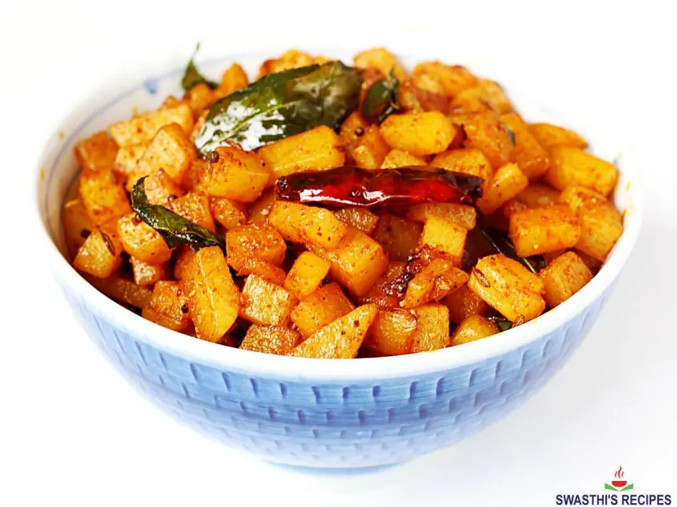

Aloo Fry

Description
Aloo Fry is a simple and delicious dish made from crispy fried potatoes seasoned with turmeric, chili, and salt. It makes a perfect side dish or snack and can be enjoyed hot for maximum taste.
ingredients
- 2 medium potatoes
- 1 tsp turmeric powder
- 1 tsp chili powder (optional)
- salt to taste
- 2 tsp oil
steps
- Peel and thinly slice the potatoes.
- Heat oil in a pan on medium heat.
- Add potatoes, turmeric, chili powder, and salt.
- Fry while stirring occasionally until golden and crispy
Go back